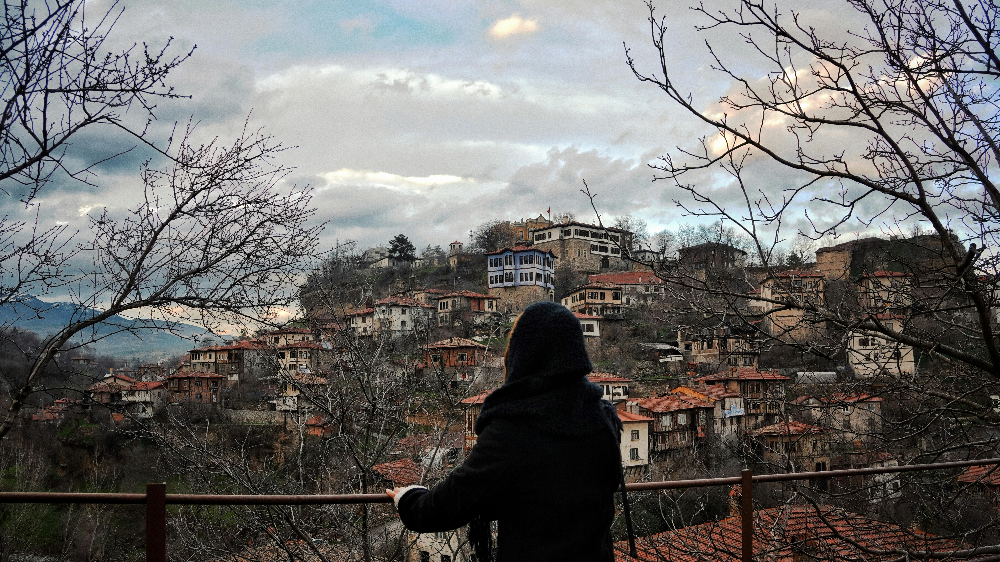
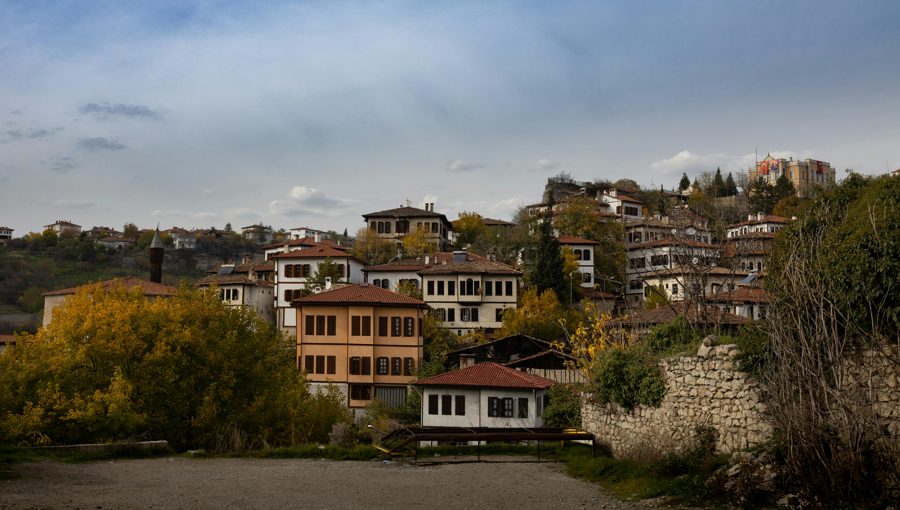

Welcome to my Literary World
I am Tuba Nur Yılmaz, a storyteller born and raised amidst the whispering shadows of Safranbolu's historical mansions. My journey as a writer began in the narrow, cobblestone streets where every wooden shutter holds a secret and every ancient stone has a tale to tell. I dedicate my work to capturing these hidden narratives.
My work is a tribute to the delicate balance between cultural heritage and the living spirit of our town. Beyond the grand architecture, I find my truest inspiration in the silent, furry guardians of these streets—the cats of Safranbolu. They are the true witnesses to centuries of history, purring through the generations while the world changes around them.
Through my novels and tales, I invite you to step into this magical atmosphere. Explore the feline narratives, wander through my blog posts reflecting on our aesthetics, and discover the deep-rooted history of this UNESCO site. Welcome to a world where history breathes and every corner inspires a new chapter of wonder.


Media From Safranbolu

Safranbolu Old Town

Cat of Safranbolu

Historical Landscape